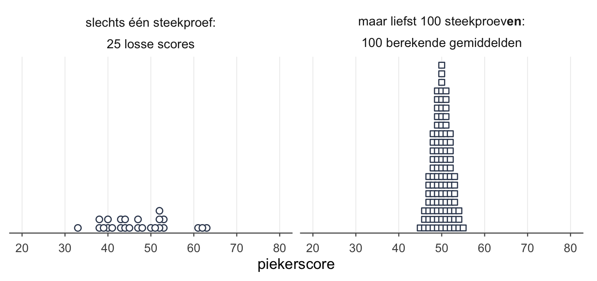
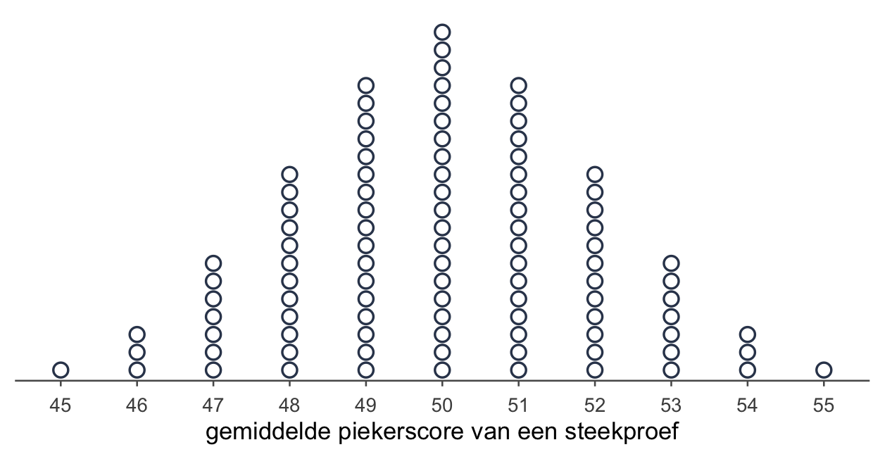
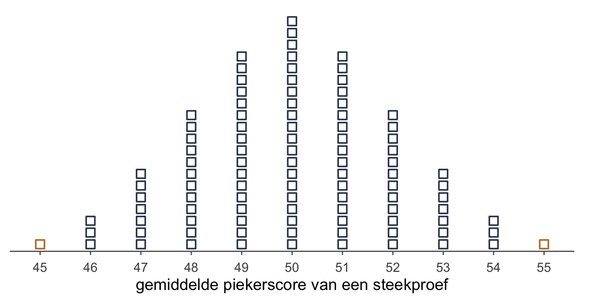
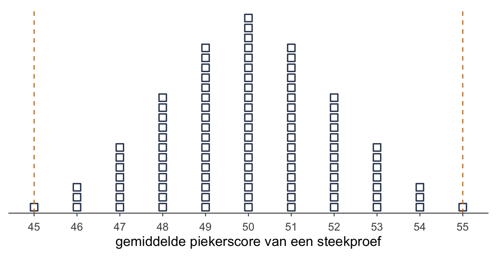
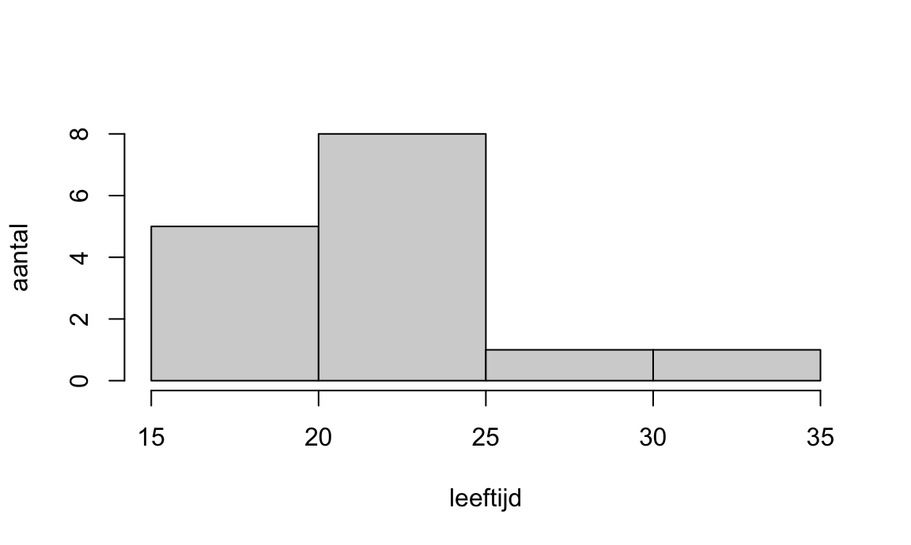

Week 1 · Steekproevenverdelingen en hypothesetoetsing
de kapstok — waar de andere zes weken aan komen te hangen
De vleermuis sliep weer niet en wist het zeker: alle slechte slapers piekeren meer dan andere dieren.
“Hoeveel slechte slapers ken je?” vroeg de zevenslaper.
“Mezelf, de nachtvlinder en nog iemand,” zei hij, “maar Jung schreef ook: Ik hoef niet te geloven; ik weet het.”
“Hij had het over God,” zei ze, “en jij over drie slechte slapers die je toevallig kent.”
De vraag onder alle zeven weken
Je meet iets bij een groepje mensen, en je ziet een verschil. Slechte slapers piekeren in jouw steekproef wat meer dan gemiddeld, zeg. En dan komt de vraag waar dit hele oefenboek om draait:
Zit dat verschil ook in de populatie, of had je net zo goed toevallig déze mensen kunnen trekken?
Zeven weken lang stel je die ene vraag, telkens in een ander jasje: bij één gemiddelde, bij twee gemiddelden, bij categorieën, met en zonder klokvorm. Deze eerste week gaat niet diep. Ze hangt de kapstok op: de haakjes waar elke volgende week aan komt te hangen. Rekenen doe je hier nauwelijks; je telt stippen. Waar iets later wordt uitgewerkt, staat erbij in welke week.
Alleen God weet het gemiddelde
Je wilt iets zeggen over alle slechte slapers: de populatie. Hun gemiddelde piekerscore heet μ (mu). Dat getal ken je niet, en je gaat het ook nooit kennen. Daarom krijgt het een Griekse letter: vage letters voor vage dingen.
Wat je wél kent, is je steekproef: de 25 mensen die je echt gemeten hebt. Hun gemiddelde heet (x-streep). Dat getal reken je gewoon uit.
| populatie | steekproef | |
|---|---|---|
| wat het is | iedereen over wie je iets wilt zeggen | de mensen die je echt gemeten hebt |
| gemiddelde | μ | |
| standaarddeviatie | ||
| aantal | N | n |
| ken je het? | nee — een parameter | ja — een statistiek |
En dan de zin om nooit te vergeten: alles draait om de populatie. Niemand schrijft een artikel over de 25 mensen die toevallig meededen. Je gebruikt hun gemiddelde om iets te zeggen over μ. Netjes gezegd: de statistiek schat de parameter μ. Je steekproef zelf schat niets; op je steekproef reken je.
Drie verdelingen die bijna hetzelfde heten
Drie woorden, en twee ervan verschillen maar één lettergreep.
- De populatieverdeling: de scores van iedereen in de populatie.
- De steekproefverdeling: de scores van de mensen in jouw ene steekproef.
- De steekproevenverdeling: de verdeling van een statistiek — bijvoorbeeld — over alle mogelijke steekproeven van dezelfde grootte n uit dezelfde populatie.
Die derde is het hart van alles wat hierna komt, en hij is het lastigst voor te stellen. Dus een spelletje. Stel, honderd mensen trekken elk een eigen steekproef van 25 slechte slapers. Ieder rekent het gemiddelde uit, schrijft het op een bordje, en hangt het bordje aan een lijn — op volgorde, kleine getallen links, grote rechts. Die rij bordjes is de steekproevenverdeling. Eén bordje is niet één mens; één bordje is één steekproef. Eigenlijk horen álle mogelijke steekproeven aan die lijn, maar honderd is genoeg om de vorm te zien.
Waarom die bordjes rond het midden een klokvorm maken, en hoe breed die klok is, werken we uit in week 2 (Hypothesetoetsen voor één gemiddelde). De klok heet dan de normaalverdeling, de reden de centrale limietstelling (central limit theorem), en de breedte de standaardfout (standard error). Deze week tellen we alleen.
Wil je de normaalverdeling en z-scores alvast opfrissen? Dat kan in week 0: de voorkennis voor week 2.
Twee hypothesen: niets aan de hand, of wel
Bij elke toets zet je twee uitspraken over de populatie tegenover elkaar.
- De nulhypothese : er is niets aan de hand. Geen verschil, geen verandering. Denk bij de nul altijd: afwezig.
- De alternatieve hypothese : er is wél iets aan de hand. Dit is meestal wat de onderzoeker verwacht.
Voor de slechte slapers, als de piekervragenlijst zo gemaakt is dat het gemiddelde in de algemene bevolking 50 is:
: — slechte slapers piekeren gemiddeld net zoveel als iedereen
: — slechte slapers piekeren gemiddeld anders
Drie regels, en elk paar dat je ooit opschrijft moet ze alle drie halen:
- Over de populatie, dus over μ. Nooit over : dat getal ken je al, daar valt niets aan te toetsen.
- Het is-gelijkteken staat in . De nulhypothese noemt één precieze waarde; daar reken je vanuit.
- Samen dekken ze alles. Wat niet onder valt, valt onder . Geen gat ertussen.
Tweezijdig. In staat ≠, en ongelijk betekent: het kan naar boven of naar beneden. Dat heet tweezijdig toetsen, en dat doe je in dit oefenboek standaard. Er zijn vier redenen om dat ook te doen als je wél een richting verwacht:
- Vaak heb je geen richting. Je weet niet of slechte slapers meer of minder piekeren; je wilt weten óf het anders is.
- Heb je wel een verwachting, dan wil je nog steeds zien als het de andere kant op gaat. Een training die het piekeren erger maakt, wil je niet missen.
- Sommige toetsen hebben geen kant. Daar bestaat eenzijdig niet eens; die kom je tegen in week 4 (Kansen en toetsen voor categorische variabelen).
- Wie de richting kiest nádat hij de data zag, speelt vals. Dat heet post-hoc hypothesevorming. Tweezijdig vooraf voorkomt dat.
Je komt ook tegen als . Zelfde ding, andere naam.
Stippen tellen
Nu het hart van de week. Je kunt de vraag “is mijn verschil echt?” niet rechtstreeks beantwoorden. Wat je wél kunt: doen alsof waar is, en kijken hoe raar jouw uitkomst dan zou zijn.

Dit is een steekproevenverdeling: elke stip is een bordje uit het spelletje. Kijk waar de stippen liggen. De meeste zitten dicht bij 50 — logisch, want in deze wereld ís het gemiddelde 50. Maar niet allemaal: puur door toeval komt een steekproef soms op 54 of 46 uit, en heel af en toe op 55 of 45. Zo ver kan het toeval je dus brengen, zelfs als er niets aan de hand is.
Nu jouw eigen steekproef. Stel, de echte steekproef van 25 slechte slapers geeft . Hoe raar is dat, áls waar is?
Tel de stippen die minstens zo ver van 50 liggen als jouw 55. Jouw 55 ligt 5 boven 50. Even ver aan de andere kant is 45. Dus:
| stippen | |
|---|---|
| 55 of hoger | 1 |
| 45 of lager | 1 |
| samen | 2 |

Dat getal is de p-waarde. In woorden: áls slechte slapers echt gemiddeld 50 scoren, dan kom je maar in 2 van de 100 steekproeven zo ver of verder van 50 uit als jij deed.
In week 0 stond bij elk stuk van de klok een p: de kans op dat stuk. De p-waarde is precies zo’n p. Nu staat in het midden, en ligt de grens bij jouw uitkomst, aan beide kanten.
En bij ? Zelfde recept. 53 ligt 3 boven 50; aan de andere kant is dat 47. Tel:
- 53 of hoger: 11 stippen;
- 47 of lager: 11 stippen.
Zo’n gemiddelde komt in deze wereld zonder verschil gewoon regelmatig voor.
De p-waarde: wat hij zegt, en wat niet
Drie onderdelen, en ze moeten er alle drie in staan:
- het is een kans — een getal tussen 0 en 1;
- over deze of een extremere uitkomst — bij tweezijdig toetsen aan beide kanten;
- gegeven dat waar is — je rekent in de wereld waarin er niets aan de hand is.
Je kunt de p-waarde zien als je verrassingswaarde: hoe verbaasd je moet zijn over je data, als waar is. Hoe kleiner p, hoe groter de verbazing.
Let nu goed op wat er wel en niet staat. De p-waarde is de kans op een fiets als het een bakker is. Het is niet de kans dat het een bakker is, nu je een fiets hebt. Die twee lijken op elkaar en zijn heel verschillende kansen.
Beslissen
Een p-waarde is een getal; een toets eindigt met een beslissing. Daarvoor spreek je vóóraf een grens af: het significantieniveau α (alfa). In dit oefenboek is dat altijd α = .05, tenzij een opgave iets anders zegt.
- Is , dan verwerp je . Het resultaat is significant.
- Is , dan verwerp je niet.
Bij de slechte slapers met is , en .02 ≤ .05. Je verwerpt de nulhypothese dat slechte slapers gemiddeld 50 scoren op de piekervragenlijst. Bij is : die nulhypothese verwerp je niet.
Zeg altijd wát je verwerpt. Niet “we verwerpen hem”, maar “we verwerpen de nulhypothese dat …”.
De andere route: de kritieke waarde
Je kunt ook vooraf in de stippenplot een grens trekken. Welke gemiddelden zijn zó ver van 50 dat de p-waarde onder .05 komt?
| Hoe ver van 50 moet een gemiddelde liggen om significant te zijn? | |||
| afstand tot 50 | gemiddelden die zo ver liggen | p | beslissing bij α = .05 |
|---|---|---|---|
| 3 | 47 of lager, 53 of hoger | .22 | niet verwerpen |
| 4 | 46 of lager, 54 of hoger | .08 | niet verwerpen |
| 5 | 45 of lager, 55 of hoger | .02 | verwerpen |
Vanaf afstand 5 zakt p onder .05. De grenzen zijn dus 45 en 55: dat zijn de kritieke waarden. Alles óp of voorbij die grenzen is het verwerpingsgebied — dus 55 zelf hoort erbij. Valt jouw in dat gebied, dan verwerp je .

Het is als koorts. Vanaf 38 graden heb je koorts; die 38 is een kritieke waarde, afgesproken vóórdat iemand de thermometer instak. De lijnen zelf zijn de kritieke waarden; alles óp en voorbij de lijnen is het verwerpingsgebied. Op een tentamen worden die twee graag door elkaar gehaald.
Twee routes, dezelfde beslissing:
- de p-waarde-route — tel beide kanten, en leg die p naast α = .05;
- de kritieke-waarde-route — trek vooraf de grenzen, en kijk of op of voorbij een grens ligt.
Ze komen altijd op hetzelfde uit. Wat misgaat, is halverwege overstappen: een p van maar één kant naast .05 leggen, bijvoorbeeld. Kies per opgave één route en maak die af.
Twee manieren om ernaast te zitten
Je beslist zonder ooit te weten hoe het echt zit. Je kunt dus fout zitten, op twee manieren.
| is in werkelijkheid waar | is in werkelijkheid niet waar | |
|---|---|---|
| je verwerpt | Type I-fout: vals alarm (kans α) | goed |
| je verwerpt niet | goed | Type II-fout: gemist (kans β) |
- Een Type I-fout is vals positief: je roept “verschil!” en er is niets. De kans daarop spreek je zelf af, met α: hij is hoogstens .05. In de stippenplot van de slechte slapers is hij zelfs maar .02: zoveel stippen (2 van de 100) liggen op of voorbij de grenzen. Eén stap naar binnen was het al .08, en dat mocht niet.
- Een Type II-fout is vals negatief: er ís een verschil, maar jouw toets ziet het niet.
Hoe groot die tweede kans is en hoe je hem kleiner maakt, is week 5 (Effectmaten en power).
Niet significant is niet hetzelfde als gelijk
Bij verwierp je niet. Betekent dit dat slechte slapers gemiddeld precies 50 scoren? Nee.
Je mag maar twee dingen zeggen: “ verwerpen” of “ niet verwerpen”. Nooit “ aannemen”, “ accepteren” of “ behouden”. Niet verwerpen betekent: het bewijs is niet sterk genoeg. Het betekent niet dat er niets is. Het verschil kan er best zijn, alleen te klein om met deze steekproef te zien.
Welke waarden voor μ je data nog wél toelaten, laat het betrouwbaarheidsinterval zien: week 3 (Hypothesetoetsen voor twee gemiddelden en betrouwbaarheidsintervallen). En dat significant ook weer niet hetzelfde is als groot of belangrijk, ofwel praktisch significant: week 5.
Het stappenplan
Elke toets in dit oefenboek loopt langs dezelfde zes stappen. Deze week vul je ze in met stippen; vanaf week 2 met formules.
- Hypothesen. Schrijf en op, over μ. Spreek α af.
- Steekproevenverdeling. Hoe zien de uitkomsten eruit als waar is?
- Toetsstatistiek. Welk getal uit je steekproef leg je ertegen? Deze week is dat zelf.
- p-waarde. Hoe extreem is jouw uitkomst? Vergelijk p met α.
- Statistische conclusie. verwerpen of niet verwerpen.
- Inhoudelijke conclusie. Beantwoord de onderzoeksvraag, in gewone woorden.
Voor de slechte slapers met :
- : μ = 50; : μ ≠ 50; α = .05.
- De stippenplot van Figuur 2: honderd gemiddelden onder .
- .
- , en dat is ≤ .05.
- Verwerp de nulhypothese dat de gemiddelde piekerscore van slechte slapers 50 is.
- Slechte slapers piekeren gemiddeld anders dan de algemene bevolking — in deze steekproef méér.
Welke toets je in stap 2 en 3 kiest, hangt af van je vraag: één gemiddelde, twee, of categorieën. Dat overzicht komt aan het eind: week 7 (Toetskeuze en overzicht). En wanneer je die gladde klok in stap 2 eigenlijk mag gebruiken: week 6 (Assumpties en alternatieve toetsen).
In R: rijen kiezen
Deze week doe je in R één ding: uit een dataset de rijen halen die je nodig hebt. De oefendataset slaapstudie heeft 30 eerstejaars die slecht slapen. De helft kreeg een slaaptraining, de andere helft niet (de controlegroep). Van iedereen staan de leeftijd en een piekerscore vóór en ná in de tabel.
Download slaapstudie.RData en zet het in je projectmap. (Nog geen project? In RStudio: File > New Project…, dan New Directory > New Project. De map die je daar kiest, is je projectmap.) Dan:
## Inladen ----
# load() zet het object slaapstudie in je Environment
load("slaapstudie.RData")# de eerste zes rijen
head(slaapstudie) id groep leeftijd piekeren_voor piekeren_na
1 1 training 19 54 51
2 2 controle 24 49 45
3 3 training 19 48 47
4 4 training 26 54 55
5 5 controle 34 61 58
6 6 controle 21 54 56Een dataframe heeft rijen en kolommen. Drie dingen heb je nodig:
data[rijen, kolommen]kiest rijen en kolommen; laat je één kant leeg, dan krijg je alles;data$naampakt één kolom, bij zijn naam;==vraagt is dit gelijk aan?, en geeft per rijTRUEofFALSE.
## Rijen kiezen op een voorwaarde ----
# welke rijen horen bij de controlegroep? TRUE of FALSE per rij
kies <- slaapstudie$groep == "controle"
# de rijnummers waar het TRUE is
which(kies) [1] 2 5 6 10 11 13 14 15 18 19 21 23 26 28 30# alleen die rijen, alle kolommen
controle <- slaapstudie[kies, ]
# hoeveel mensen zijn dat?
nrow(controle)[1] 15# de jongste en de oudste
range(controle$leeftijd)[1] 18 34# de gemiddelde leeftijd in de controlegroep
mean(controle$leeftijd)[1] 22.33333De controlegroep heeft 15 mensen, van 18 tot 34 jaar, gemiddeld 22.33 jaar.
hist(controle$leeftijd, main = "", xlab = "leeftijd", ylab = "aantal")
Een rapport van je script
Van een script maak je met één opdracht een rapport: je code, met de uitvoer en de figuren eronder, in één HTML-bestand. Het ziet eruit als dit R-deel hierboven. In RStudio: File > Compile Report… (of Ctrl+Shift+K, op een Mac Cmd+Shift+K), en kies HTML. Het rapport komt naast je script te staan, met dezelfde naam.
Compile Report draait je hele script opnieuw, van boven naar beneden, en begint met een lege Environment. Wat er in jouw Environment staat omdat je het in de console typte, kent het rapport niet: het kent alleen wat in je script staat. Lukt het niet, kijk dan naar vier dingen:
- staan je script en je data in dezelfde projectmap?
- staan
library()enload()bovenaan in je script, vóór de regels die ze nodig hebben? - staat er
View()ofinstall.packages()in? Haal ze eruit: die horen in de console. - stopt je script zelf ergens met een fout? Draai het eerst van boven naar beneden (Code > Run Region > Run All); waar het daar stopt, stopt het rapport ook.
Oefenen
OpgeletAntwoord 1.6
## a. inladen ----
load("slaapstudie.RData")## a. bekijken ----
head(slaapstudie) id groep leeftijd piekeren_voor piekeren_na
1 1 training 19 54 51
2 2 controle 24 49 45
3 3 training 19 48 47
4 4 training 26 54 55
5 5 controle 34 61 58
6 6 controle 21 54 56## b. ouder dan 25 ----
which(slaapstudie$leeftijd > 25)[1] 4 5 23 29## c. de controlegroep, in twee stappen zoals hierboven ----
kies <- slaapstudie$groep == "controle"
controle <- slaapstudie[kies, ]
hist(controle$leeftijd, main = "", xlab = "leeftijd", ylab = "aantal")
## d. de gemiddelde leeftijd in de controlegroep ----
mean(controle$leeftijd)[1] 22.33333## e. de trainingsgroep, na ----
kies <- slaapstudie$groep == "training"
training <- slaapstudie[kies, ]
mean(training$piekeren_na)[1] 51.26667Vijf variabelen:
id,groep,leeftijd,piekeren_voorenpiekeren_na.Rij 4, 5, 23 en 29.
Zie het histogram hierboven: de meesten zijn tussen de 18 en 24, met een paar uitschieters naar boven.
22.33 jaar.
51.27.
File > Compile Report…, en kies HTML. In je projectmap staat daarna een HTML-bestand met dezelfde naam als je script. Krijg je een fout, loop dan de vier vragen onder Een rapport van je script langs, te beginnen bij de eerste: staat
slaapstudie.RDatain de projectmap?
Tentamenblok
Zo kun je het op een tentamen tegenkomen: meerkeuze met vier opties, een getal invullen, of ja of nee. De vragen 1 tot en met 4 gaan over de figuur van opgave 1.5.
De kapstok in één oogopslag
| haak | deze week | komt terug in |
|---|---|---|
| populatie en steekproef | μ schat je, reken je uit | elke week |
| de steekproevenverdeling | honderd bordjes, stippen tellen | waarom een klok: week 2 |
| en , tweezijdig | niets aan de hand, of wel; ≠ is twee kanten | elke week; toetsen zonder kant in week 4 |
| de p-waarde | de kans op deze of extremer, áls waar is | uitrekenen in plaats van tellen: week 2 |
| beslissen: α, kritieke waarde | : verwerpen | elke week |
| Type I- en Type II-fout | vals alarm of gemist | de kans dat je iets mist: week 5 |
| niet significant ≠ gelijk | niet verwerpen is niet aannemen | week 3 en week 5 |
| het stappenplan | zes stappen, elke week dezelfde | welke toets wanneer: week 7 |